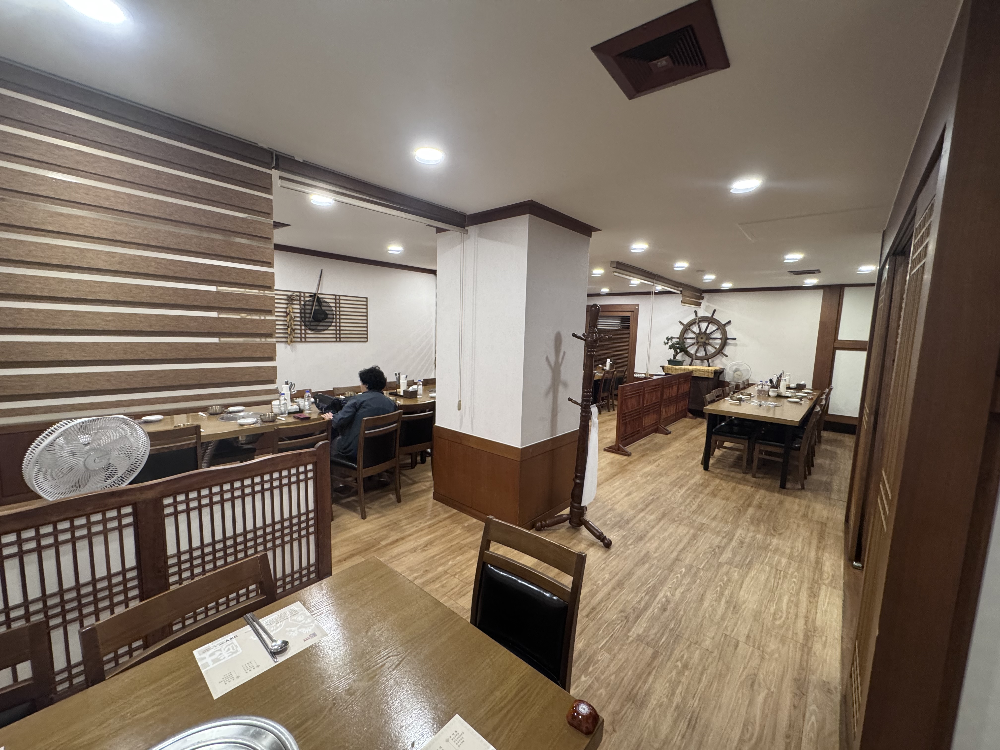
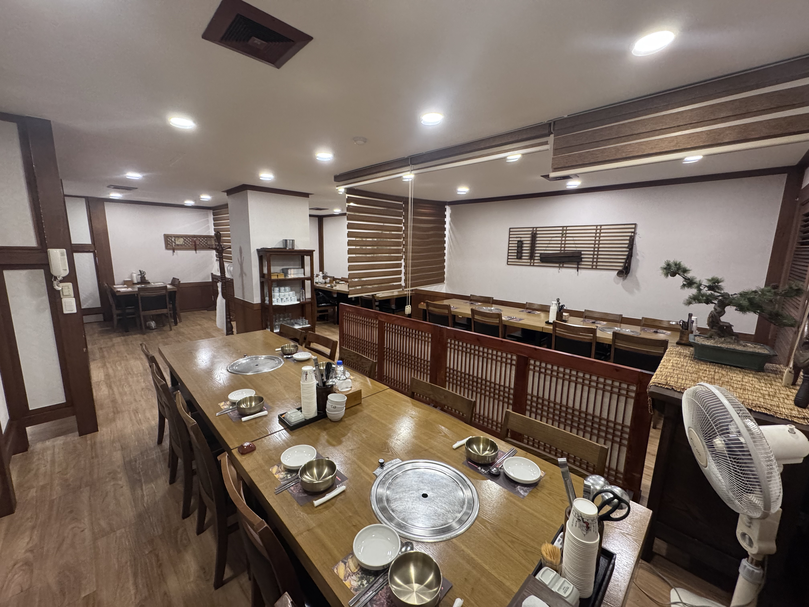
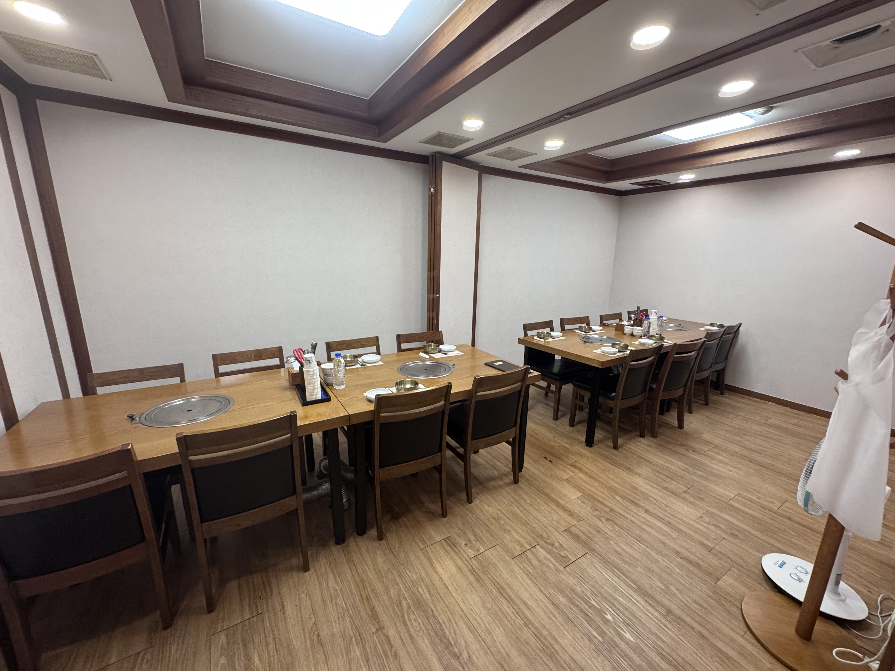

40인실 · 사진 1·2의 연결 공간


배치 40명
주민환경연구원 29명 + 실천단·유관기관 4명 + 지정 직원 7명
40인 정원에 맞춰 배치
주민환경연구원 29명 + 실천단·유관기관 4명 + 지정 직원 7명
40인 정원에 맞춰 배치



| 식사실·구분 | 성명 | 인원 |
|---|---|---|
| 독립실 내빈 |
김순애 관장, 이정순 동장, 이병정 동장, 신희철 동장, 황운용 관장, 황선우 운영위원장, 정철 센터장 | 7명 |
| 40인실 주민환경연구원 |
남기룡, 남혜신, 도윤화, 박수경, 박종숙, 송두순, 송흥례, 신철주, 이하준, 장미경, 최미화, 곽윤향, 김동은, 김경은, 김상희, 김신희, 김용순, 백재현, 손숙희, 김성순, 곽성희, 김교상, 노은하, 서명숙, 이승준, 이시영, 이은선, 정상섭, 우미영 | 29명 |
| 40인실 실천단·유관기관 |
윤수진 팀장, 배영미 팀장, 전희택 대표, 이지연 주임 | 4명 |
| 40인실 지정 직원 |
김정현, 이현직, 김연수, 이승원, 박정훈, 강승원, 박지윤 | 7명 |
| 별도 방 실천단·유관기관 |
배순향 팀장, 구희정 주무관, 정수일 주무관, 이은주 주무관, 조하련 복지팀장, 장윤진 복지팀장, 정창호 주무관 | 7명 |
| 별도 방 복지관 직원 |
김형석 부장, 이진규, 정은해 | 3명 |
| 나머지 방 하계실습생 |
하계실습생 1~10 | 10명 |
| 나머지 방 직원 |
김재훈 (실습담당), 김혜린 | 2명 |
| 합계 | 69명 | |
| 결제 구분 | 산출 기준 | 금액 | 현장 준비 |
|---|---|---|---|
| 공동모금회 지원금 | 52명 × 15,000원 | 780,000원 | 공동모금회 지원금 결제수단·영수증 별도 |
| 성과공유회 식대 자부담 | 52명 × 5,000원 | 260,000원 | 성과공유회 자부담 카드 별도 지참 |
| 실습 중간평가비 자부담 | 17명 × 20,000원 | 340,000원 | 실습 중간평가비 자부담 결제수단·영수증 별도 |
| 합계 | 1,380,000원 | 3개 재원별 분할 결제 | |